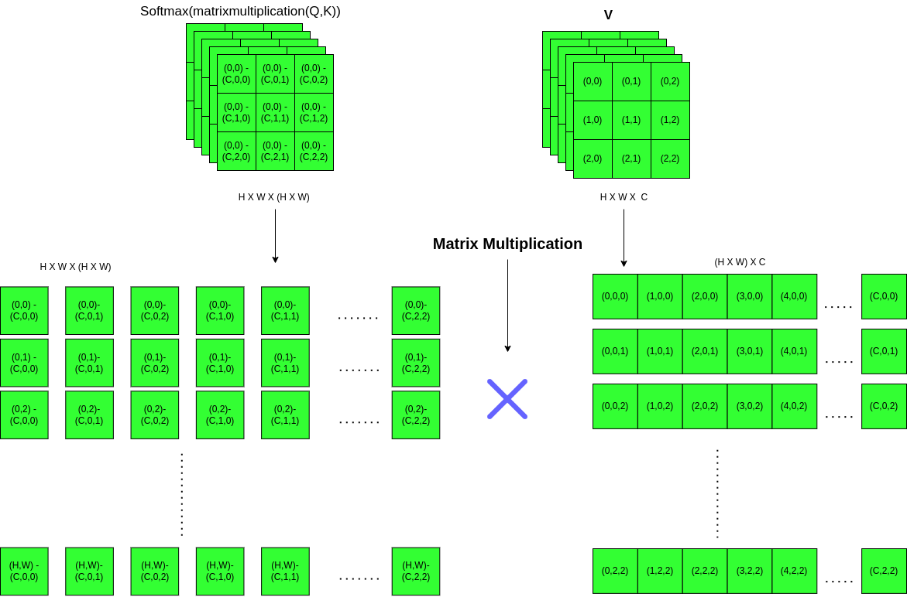

<!DOCTYPE html>
<html lang="en-US">
  <head>
    <meta charset="UTF-8">
    <meta http-equiv="X-UA-Compatible" content="IE=edge">
    <meta name="viewport" content="width=device-width, initial-scale=1">
    <title>Mobile Detector</title>
    <link rel="preconnect" href="https://fonts.gstatic.com" crossorigin="crossorigin"/>
    <link rel="preload" as="style" href="https://fonts.googleapis.com/css2?family=Poppins:wght@600&amp;family=Roboto:wght@300;400;500;700&amp;display=swap"/>
    <link rel="stylesheet" href="https://fonts.googleapis.com/css2?family=Poppins:wght@600&amp;family=Roboto:wght@300;400;500;700&amp;display=swap" media="print" onload="this.media='all'"/>
    <noscript>
      <link rel="stylesheet" href="https://fonts.googleapis.com/css2?family=Poppins:wght@600&amp;family=Roboto:wght@300;400;500;700&amp;display=swap"/>
    </noscript>
    <link href="../css/font-awesome/css/all.min.css?ver=1.2.1" rel="stylesheet">
    <link href="../css/mdb.min.css?ver=1.2.1" rel="stylesheet">
    <link href="../css/aos.css?ver=1.2.1" rel="stylesheet">
    <link href="../css/main.css?ver=1.2.1" rel="stylesheet">
    <noscript>
      <style type="text/css">
        [data-aos] {
            opacity: 1 !important;
            transform: translate(0) scale(1) !important;
        }
      </style>
    </noscript>
  </head>
</html>

<header class="d-print-none">
  <div class="container text-center text-lg-left">
    <div class="pt-4 clearfix">
      <div class="site-nav"> 
        <nav role="navigation">
          <ul class="nav justify-content-center">
            <li class="nav-item"><a class="nav-link" href="#drawbacks" title="Drawbacks of CNNs"><span class="menu-title">Drawbacks of CNNs</span></a>
            </li>
            <li class="nav-item"><a class="nav-link" href="#transformer" title="Transformers and Self Attention:"><span class="menu-title">Transformers and Self Attention</span></a>
            </li>
            <li class="nav-item"><a class="nav-link" href="#mobile" title="MobileVITs"><span class="menu-title"> MobileVITs</span></a>
            </li>
            <li class="nav-item"><a class="nav-link" href="#transfer" title="Transfer Learning"><span class="menu-title">Transfer Learning</span></a>
            </li>
            <li class="nav-item"><a class="nav-link" href="#results" title="Experimental Results"><span class="menu-title">Experimental Results</span></a>
            </li>
            <li class="nav-item"><a class="nav-link" href="#reference" title="References"><span class="menu-title">References</span></a>
            </li>
          </ul>
        </nav>
      </div>
    </div>
  </div>
</header>

<div class="page-content">
  <div class="container">
      <div class="shadow-1-strong bg-white my-5 p-5" id="drawbacks">
        <div class="drawbacks-section">
        <h2 class="h2 fw-light mb-4"> <u>a. Drawbacks of CNNs: </u></h2>
        <p> The problem with traditional CNNs is that, though they capture local dependencies in an image, they lack the concept of <b>"big picture"</b>. 
         In a sense they fail to capture global context of a particular image. For example, if we refer to the image shown below (a popular meme from the internet),and when a state-of-the-art CNN based model that was trained on imagnet
         looks at this image, then it's definitely not going to classify it as a dog with a higher confidence. Maybe its going to see it as a tiger or a zebra, in some cases. </p>
         Apparently, what the model fails to observe are two major features of this image:<br>
         1) There's a shadow of poles falling on the dog. <br>
         2) Even if its similar to a wild animal(like a tiger, say), mostly we don't see them roaming on concrete roads freely. <br>
         <br>

          
         <div style="text-align: center"> 
          <a href=" https://in.pinterest.com/pin/740490363718406565/"> Source:Pinterest </a> 
        </div>
         <br>

        <p>The point is, its necessary for any vision model to have an overall understanding of relationships between each element that constitutes an image. To achieve this, 
         we need to have a specialized architecture, that do not require any external intervention.</p>

        </div>
      </div>    


      <div class="shadow-1-strong bg-white my-5 p-5" id="transformer">
        <div class="transfomer-section">
         <h2 class="h2 fw-light mb-4"> <u>b. Transformers and Self Attention: </u></h2>

         <p> As discussed earlier, that relation between every element in an image is to be determined by the model. It's important that the model has some sort of intuition of an object present in different types of contexts or backgrounds. 
          Therefore it should be able to evaluate every pixels or group of pixels present in the image, relate them to each other, and then come to a conclusion about that image. Since it's computationally expensive to evaluate every single pixels present
          in an image, we divide the image into equal parts or patches, then find out the relation between each and every individual patch with another patches in the image. Refer to the image below to see an example of an image divided in patches:    
         </p>
         
          <br>

         Most suitable architectures to find out relation between each of these patches, are <b>Transformers</b>. These models are directly taken from the field of <b>NLP</b>(natural language processing), more details can be found out <a href="https://arxiv.org/pdf/1706.03762.pdf">here.</a> <br>
         A step by step explanation of how transformers work is given below:<br>
         1. Transformers take the image patches by <b>numbering them from 1 to n</b>, and each number given to a patch is called <b>positional embedding</b>. <br>
         2. These embeddings are useful in a sense where the model knows what kind of patches are generally present in particular places. <b>Zeroth positonal embedding</b> is for the class of the object present in the image.<br>
         3. The image patches are then transformed into an intermediate form called <b>linear projections</b> and these projections coupled with their respective positional embeddings are passed as inputs to transformer architecture.<br>
         4. A <b>MLP(multi-layered-perceptron)</b> head is attached to the final feature map given out by the transformer block to predict the class present in the image.<br>
        <b>All the above mentioned steps can be summarized as shown in the image below:</b> <br>
      
        
        <div style="text-align: center"> 
          <a href="https://ai.googleblog.com/2020/12/transformers-for-image-recognition-at.html"> Source: Google Brain Article </a> 
        </div>
      <br>
      The key to understand global context of the image lies in the architecture of the single transformer block. Let us examine each component of this architecture.<br>
      <br>
      <h4 class="h4 fw-light mb-4"> <b>1. Single Transformer Block:</b> </h4>
        A single transformer block contains two layers, a <b>Multi Headed Attention Layer</b> and a <b>MLP Layer</b>.Input to the each of these layers, first goes through a normalization layer, for the removal of <b>internal covariance shift</b>.
        
        <div style="text-align: center"> 
          <a href="https://theaisummer.com/vision-transformer/"> Source: AI Summer article </a> 
        </div>
        <br>
        <h5 class="h5 fw-light mb-4"> <u>a. Multi Headed Attention Layer: </u> </h5>
          This layer implements the concept of <b>self attention</b>, in simple terms every patch of input image finds out the relation with every other patch of the input image as shown in the image below.<br>
          
          <div style="text-align: center"> 
            <a href="https://arxiv.org/abs/2110.02178"> Source: MobileVIT paper </a> 
          </div>
          <br>
          Here we will understand every function present in this module step by step:<br>
          <br>
          1. First, consider an input image of size H X W X C, where <b>H = height of the image, W = Width of the image, C = channels</b>. This input is passed on to a <b>feed-forward</b> layer that splits
          it into three seperate vector representations of same height and width as the original and divides them channel-wise based on the number of heads(<b>n</b>), namely, <b>Q(queries), K(keys), V(values)</b>. The Q, K and V vectors can be intrepreted as the same input image, but more enhanced in a way to suite the self-attention module. 
          Note that the image is structured in the form of nine <b>n x 3 x 3 x C/n</b> patches in row-column wise manner. For the purpose of understanding we'll consider that attention module is single headed.<br>
          
          <br>
          2. Second, the dot product of Q and transpose of K is taken, the purpose behind taking this dot product is to get values that defines the relation between each patch with other patches present in the image. For concrete understanding, refer to the image below:<br>
          
          So patch at position (0, 0, 0), will be multiplied with every other patch like (0, 0, 1), ...., (0, 2, 2), in the same way patch at position (0,0,1) will be multiplied with (0,0,0), (0,0,2) and so on, matching every respective channel of those patches. These values are scaled by using a predefined scalar, conseqeuently, they're are further passed on to a softmax function that would bring values between 0 to 1. Hence this vector would act as scores for each patch with respect to other patches.
          <br><br>
          3. The scores vector is finally multiplied with Value vector, to have final representations that are significantly important to each other. Please refer the image below:
          
          <br>
          4. Since every patch multiplies with every other patch, in a way these patches attend to every other patch in the image. Therefore the name self-attention is given to this process.
          The whole operation can be summarized in the following equation:<br>
          
          where square root of dk is a scalar used to scale the output vector of Q X K^T before it's passed further to a softmax function.
          <br><b>Note: The dimensions of the output from the attention calculation process remains the same as the input dimensions. Refer the image below to understand output interpretation. </b> <br>
          
          <br>
          5. If we have to imagine the multi-headed attention module, then the visualization given below helps in understanding the whole process in 3 dimensions.
          
          <div style="text-align: center"> 
            <a href="https://theaisummer.com/self-attention/"> Source:AI Summer article</a> 
          </div>
          <br>
          6. Every input is added to the output of the attention layer, like residual skip connections in ResNet.<br>
          <br>
          <h5 class="h5 fw-light mb-4"> <u>b. Multi Layered Perceptrons:</u> </h5>
          <p>1. We'll call the output from the self-attention module as <b>S</b>.
          Now, we have an S that knows the relevency of every patch in the image, now patches that are important to each other are to be refined better, those that are unrelated must be suppressed.
          For a clear global context of the whole image.</p> <p>2. A multi-layered preceptron, generally has, two feed forward layers in transformer architecture. The first layer tries to capture important patch relations as weighted sums. 
          This induces a set of distribution values that are important for seperating out the object in a given image. Furthermore, these induced representations are passed to second layer, that also trigger conditional distribution based on prior distribution.</p>
          <b>Note: The dimensions of the output from the MLP layer remains the same as the input dimensions </b><br>
          <br>
          <p>3. Every input is added to the output of the MLP layer , like residual skip connections in ResNet.</p>
          <p>4. As many transformer blocks are attached one above the other, the whole image boils down to a stage, where only the subject in the image is enhanced.</p>
          
          <br>
          <p>5. If we have to consider an example, say there's a cat in the image as shown below, just like in the traditional CNNs, the first transformer block understands low level features like the edges and curves present in the image, as soons it sees these curves are related to an animal.
            it triggers, animal patch distributions in the feed forward layer, after inducing this in the second layer, the second layer identifies that they're mostly domestic animals, hence this distribution of further induced in the next transformer blocks.</p>
          
        <h4 class="h4 fw-light mb-4"> <b>2. Benefits of Vision Transfomers(VIT):</b> </h4>

        <p>1. Every transformer block is concatenated one above the other, as shown in the image below. As we can see each of the transformer block outputs an attention map, these maps are gradually refined as we go upwards. </p>
        <br>
        <p>2. Transformers can be easily transferred to one domain to another unseen domain due to their ability to seperate regions of interest pretty easily.</p>
        <p>3. They outperfom CNNs by huge margins in terms of efficiency and accuracy due to their unparalled generalization power.</p>
        
        <h4 class="h4 fw-light mb-4"> <b>3. Downsides of Vision Transfomers(VIT):</b> </h4>
        <p>1. Transformers lack inductive bias, that means they are not immune to translation variance, hence they require to be trained on large amounts of data</p>
        <p>2. The larger the number of transformer blocks, the better would be the performance of whole architecture. Hence, these type of models are not suitable for edge deployment.</p>
        <p>3. Since they require huge amounts of data, training them from scratch would also be time consuming.  </p>
      </div>
    </div>


    <div class="shadow-1-strong bg-white my-5 p-5" id="mobile">
      <div class="mobile-section">
        <h2 class="h2 fw-light mb-4"> <u>c. MobileVITs: </u></h2>
        Keeping the drawback of transformers and CNNs in mind, researcher at Apple designed a VIT+CNN based model that is lightweight and combinedly uses both of their unique abilities to understand data. 
        This hybrid model is called as MobileVIT, the mobile in its name suggests that it's partly insipired from MobileNets.<br>
        Two main important functionalities of CNNs and VITs each, are taken into account while designing MobileVit are:<br>
        <b>CNN:</b><br>
        1. Inductive bias.<br>
        2. Invariance to data augmentation methods.<br>
        <b>VIT:</b><br>
        1. Input adaptive weights(achieved by self-attention module).<br>
        2. Understanding global context(achieved by the whole transformer block)

        <p>As stated earlier MobileVITs are a combination of CNN and transformer blocks, in particular CNNs are used as <b>Inverted Residual blocks</b>. These operations form the crux of MobileNetV2 architecture. Anyways, below we can see the operations present in 
        a single inverted residual block. It follows narrow --> wide --> narrow approach</p>
        
        <div style="text-align: center"> 
          <a href="https://www.researchgate.net/figure/Residual-block-12-36-and-inverted-residual-block_fig2_358518820"> Source:ResearchGate Article </a> 
        </div>        
        <br>
        In the above image,<br> 
        1) 1st operation is a Pointwise convolution, that has a window size of 1 x 1. <br>
        2) 2nd operation is a Depthwise Convolution, that has a window size of 3 x 3, followed by a ReLU. <br>
        3) 3rd Operation is again a Pointwise convolution, that has a window size of 1 x 1 followed by a ReLU.<br>

        <p>Instead of having multiple convolution channels, inverted residual blocks reduce the number of parameters 
          by smartly opening up the image learning 1 x 1 filters and clossing it afterwards. 
          In this way it reduces the amount of learnable paramters.</p>
        
        <b><u>The whole architecture: </u></b>
        <br>
        <div style="text-align: center"> 
          <a href="https://arxiv.org/abs/2110.02178"> Source: MobileVIT paper </a> 
        </div>
        <br>

        * MV2 means MobileNetV2 blocks, or inverted residual blocks.<br>
        * MobileVIT blocks are groups of transformer blocks. L defines the number of transformer blocks present in one MobileVIT block.<br>
        * h = w = 2 defines patch size of the input feature map.<br>

        <b>Note: Before passing the input to transformer blocks, though images are divided into patches, they do not require positional embeddings, as referenced in the paper, 
          positional embeddings are useful when the network is trained on pure transformers with different input image sizes, that depend on interpolation methods.
          Since the transformer gets its input directly from a CNN based block, positional embeddings are unnecessary. 
        </b><br>
        <br>
        <h4 class="h4 fw-light mb-4"> <u> MobileVIT_XXS: </u></h4>

        <p>There are mainly three variants of MobileVITs, they are MobileVIT-S, MobileVIT-XS and MobileVIT-XXS. We'll focus on MobileVIT-XXS, because of it's remarkable compact size. 
        Below we can refer to the whole archiitecture of MobileVIT.</p>

        <br>

        <p>Either we can add a logit layer at the end of the avergae pool layer in the above image to fine tune it on classification tasks, 
        or we take input from various stages of the model like SSD architecture to fine tune it on detection task.</p>

        <h5 class="h5 fw-light mb-4"> <u>MobileVIT_XXS object detector: </u></h5>
        <p>1. The feature maps at different stages in the MobileVIT architecture are taken into account and are passed on to a SSD Block that finds out bounding box offsets and class scores. </p>
        <br>
        <p>2. As we can see above, the SSD blocks are formed at different points in the pipeline, the points are suggested by the official repository of the paper <a href="https://github.com/apple/ml-cvnets/tree/cvnets-v0.1">here.</a> </p>
        3. Basic parameters by which the model was trained are as follows:<br>
        a. First the model was trained on ImageNet-1K as a classification task without SSD blocks, with AdamW optimizer, and a label smoothing cross-entropy loss. Cosine scheduling is used to update learning rates. Data augmentations as random resized cropping and horizontal flipping were also used.<br>
        b. Then the logit layer was removed, and SSD blocks were attached at different points in the pipeline. Except for SSD blocks, entire architecture was freezed and transfer learned as detection task on COCO dataset.<br>
        c. Again AdamW was used as an optimizer for this task, smooth L1 and cross-entropy loss were used to optimize the architecture.  
        </div>
      </div>


      <div class="shadow-1-strong bg-white my-5 p-5" id="transfer">
        <div class="transfer-section">
        <h2 class="h2 fw-light mb-4"> <u>d. Transfer Learning Approach for MobileVIT detector: </u></h2>

        <p>1. The original model was trained on 81 COCO classes, where it proposed 6 prior boxes at every point of the feature map for <b>first 5 SSD Blocks</b>, and 4 prior boxes for last SSD block. </p>
        <p>2. So for each prior box there are 4 seperate box offsets and 81 class objects(1 being the background) associated with it. Hence for 6 boxes, there would be 6 X 85, 510 values. So for every feature map of height = h and width = w given out by the ssd module, there consists h x w x 510 values. The same applies for layer that has 4 priors, hence would have 340.</p>
        <p>3. Individual loss incurred by box offsets and class scores are calculated at the end of each iteration, followed by backpropogating gradients of these losses based on an updation policy (like AdamW).</p>
        <p>4. This setting would be suitable if the model had to train from scratch. But, here if we want to transfer learn the detector model on a different set of objects, we also need to train the entire SSD blocks from scratch. Training the SSD blocks from scratch would be quite a strenuous task.</p>

        <p>5. Nevertheless, when the mobilevit-xxs that was fine tuned on COCO-2014 dataset which contained 81 classes, looks at an image that has an object out of that COCO list, it draws a perfect bounding box around it regardless the confidence of its classification.</p>
        <br>
        <p>6. It looks like the bounding box part do not require any training, but mobilevit architecture applies combined gradients of both object score and bounding box, it is necessay to seperate them out.

        <br>
        <p>7. As shown above, an output from a SSD block would always be in the shape H X W X 510, because there are 6 priors and 85 values associated to every (H,W)th value.</p>
        <p>8. Out of 510 channels, first 85 channels are associated with first prior box, next 85 are associated with second prior box and so on.</p>
        <p>9. Therefore, based on this pattern, two seperate layers can be formed by seperating out box offsets and object scores. Consequently box offsets can be freezed, and only object scores fine tuned.</p>

        </div>
      </div>


      <div class="shadow-1-strong bg-white my-5 p-5" id="results">
        <div class="results-section">
        <h2 class="h2 fw-light mb-4"> <u>e. Experimental Results while Transfer Learning: </u></h2>

        <p>Here, the model was transfer learned on a <a href="https://public.roboflow.com/object-detection/raccoon">raccon dataset</a>. As mentioned earlier, class layer and box offset layers were seperated out. Except for class layer every other layers were freezed while training. Since we do not need to update box offsets, smooth L1 loss aspect is removed, the model is updated only based on cross-entropy loss.</p>
        <p> Initial learning rate was kept at 0.01, adamw was used as the optimizer with a multistep learning rate updation policy. Learning rate was updated at every iteration after 5th epoch. Because after 5th epoch out of 10 epochs of training, loss values became too sensitive to change. </p>
        <p> Options such as SGD and RMSProp were explored as optimizers apart from AdamW. At the end, SGD was finialized because, though every other optimizer reduced the model loss from approx. 5 to 1, they became unstable after 5th epoch. <b>RMSProp</b> was bit unstable, it's final training loss was lower than other two optimzers, but its validation loss was higher. <b>AdamW</b> had a similar validation loss with SGD, but SGD is more smoother and stable than AdamW. Refer the images below:</p>
        <p></p>
        <p>The dataset had 151 train images and 29 validation images. At every iteration a batch of 32 images were passed, and it took 5 iterations to complete one epoch. So trained the model for 10 epochs.</p>
        <br>
        Every experimented optimzer's validation loss with their settings is mentioned in the above image.<br>
        <br>
        <br>
        * There are also imperfect detections, here the model gets confused between a cat and a raccon, refer the image below:<br>  
        <br>
        <br>
        <b>Note: Any feedback regarding the improvement of this article, or to suggest ways of improving research methods are highly welcomed.</b>
        <br>
      </div>
    </div>

    
    <div class="shadow-1-strong bg-white my-5 p-5" id="reference">
    <div class="reference-section">
    <h2 class="h2 fw-light mb-4"> References: </h2>
        1. Self Attention: <a href="https://www.youtube.com/watch?v=H-4bmOxiKyU&ab_channel=Alex-AI">here</a><br>
        2. Attention is all you need: <a href="https://arxiv.org/abs/1706.03762">Paper</a><br>
        3. Why feed forward layers are important in Transfomer architecture: <a href="https://medium.com/synapse-dev/understanding-bert-transformer-attention-isnt-all-you-need-5839ebd396db">here</a><br>
        4. SSD Blocks: <a href="https://arxiv.org/abs/1512.02325">Paper</a><br>
        5. Inspiration for separating out layers: <a href="https://github.com/chuanqi305/MobileNet-SSD">SSD-Caffe</a><br> 
        <h2 class="h2 fw-light mb-4"> More research is needed on this topic, link to the github repository can be found <a href="https://github.com/hungryGeek16/mvit_xxs_detector">here</a></h2> 
      </div>
    </div>
    <script type="text/javascript" id="clustrmaps" src="//clustrmaps.com/map_v2.js?d=Xu20jxZEZp3NEmsYlQuxeJ7zZA_LYtdA0zElkuGoWm4&cl=ffffff&w=a"></script>
      </div>
    </div>  
  </div>
</div> 
